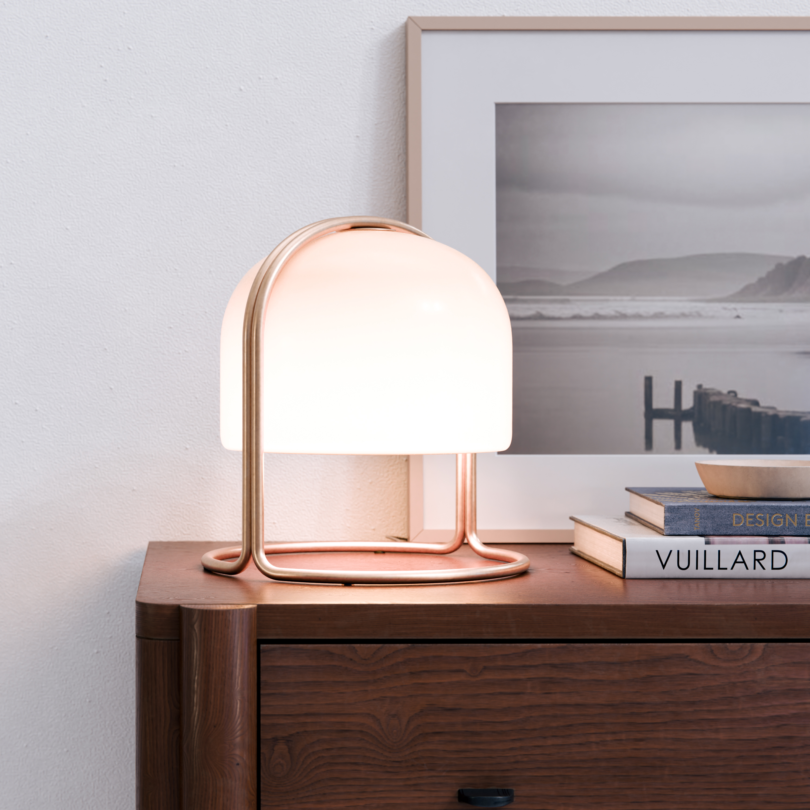
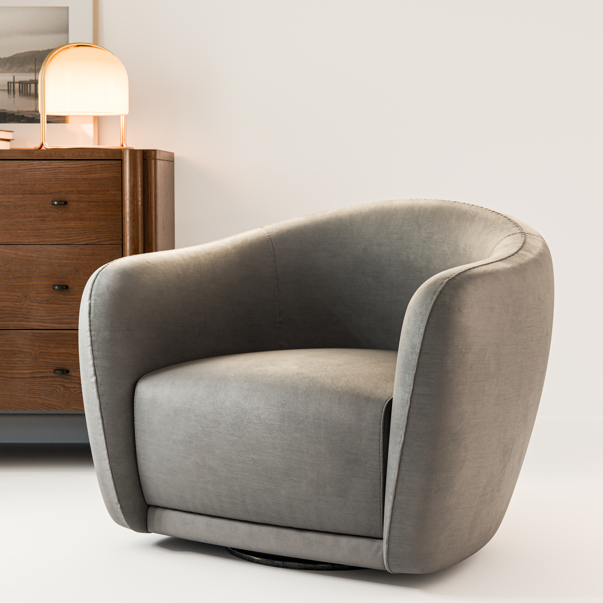
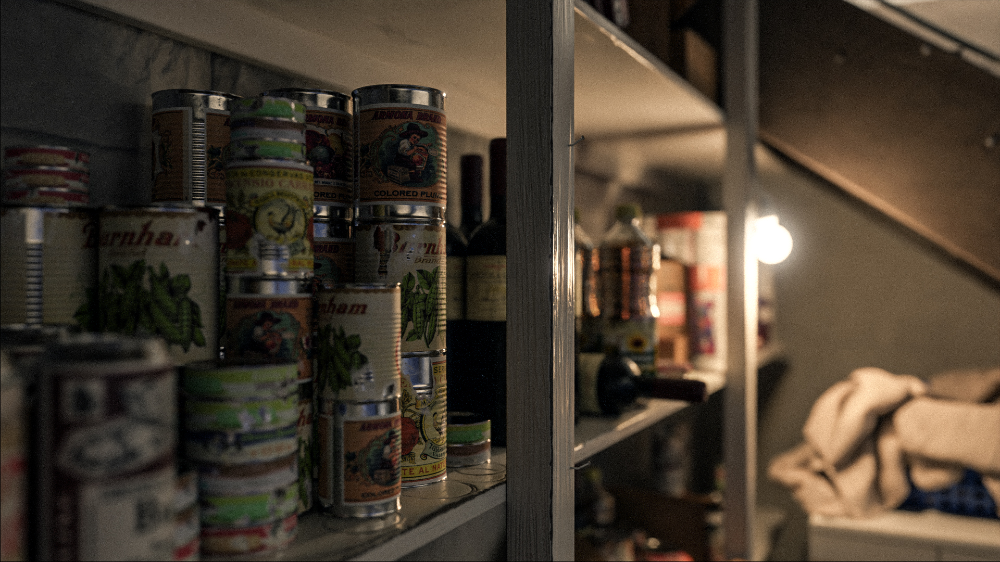

01 / PRODUCT VISUALIZATION
Material, light
and product presence.
Photoreal product imagery focused on material response, lighting, controlled composition and believable surface detail.


From clean commercial presentation to close material studies and more atmospheric interior lighting.
